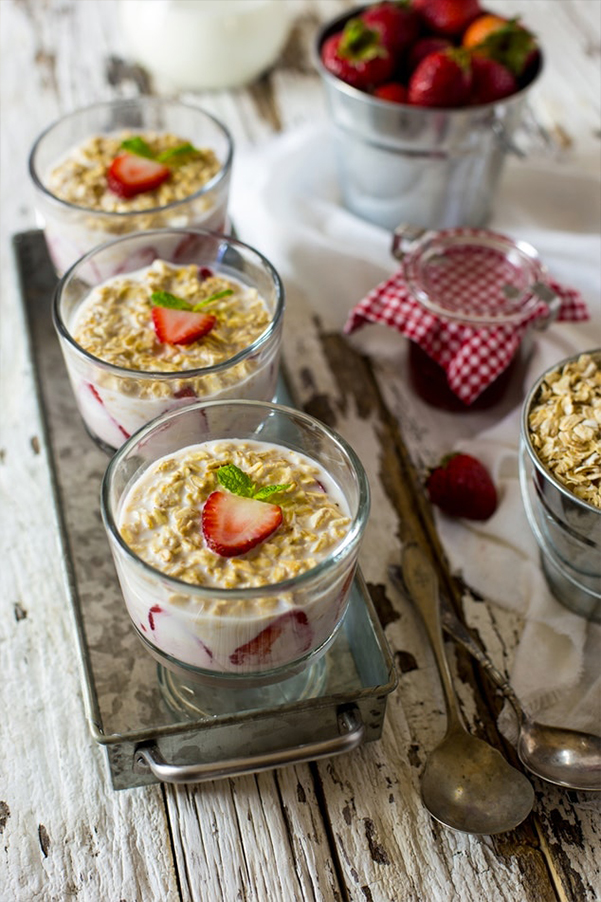

20 de abril
¿Cómo preparar las mejores hamburguesas?

Tengo 32 años, hace dos que estudio cocina y soy fanática de la comida, espero que les guste mi contenido.

By Maria
Mayo 19, 2017
20
10
En éste artículo van a poder ver una receta muy simple, sana y muy rica!

By Maria
Mayo 19, 2017
43
70
En éste artículo van a poder ver una receta muy simple, sana y muy rica!